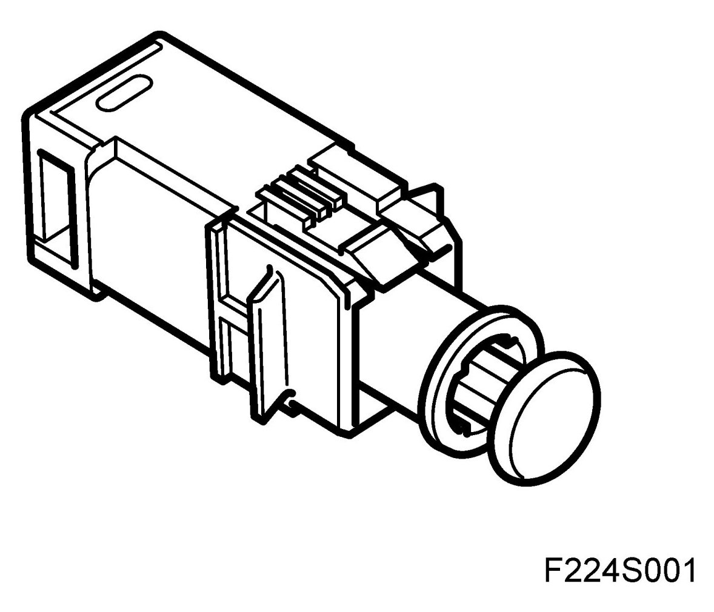
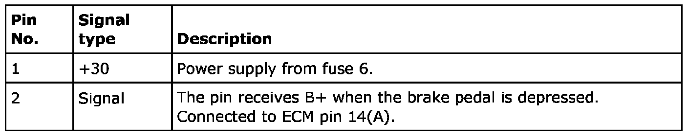
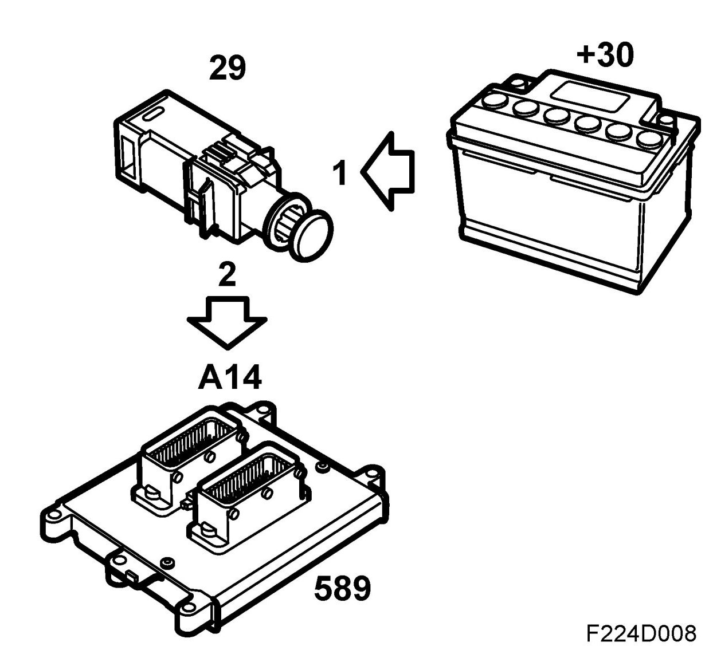
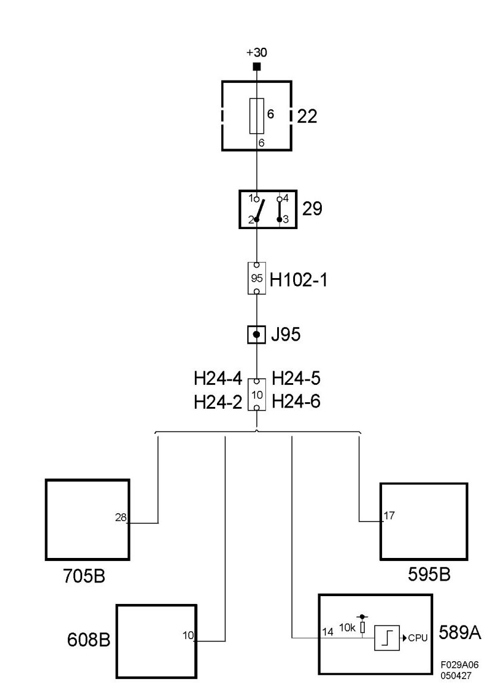

Brake Light Switch (29), T8
Brake Light Switch (29), T8
Location
Brake light switch (29)
Main task
Brake light information is used by the control module to:
- Disengage cruise control
- Limit engine torque when braking
- Allow for vehicle speed signal diagnosis.
Type
Closing switch.

Connection


